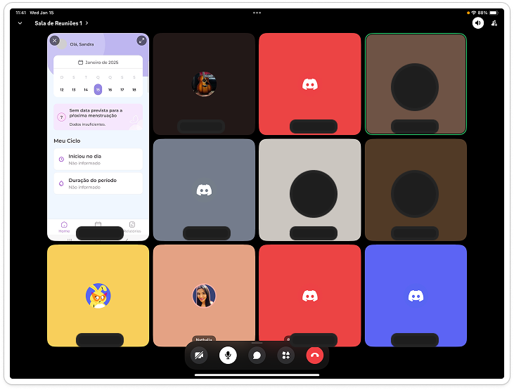

Pioneering an unconventional period-tracking platform.
YEAR
OVERVIEW
Pipoca Ágil is an innovative initiative designed to empower early-career professionals by providing them with hands-on experience in agile teams. In this project, participants are working on a cutting-edge period tracker app, requested by a key stakeholder. This app is set to enhance women's health tracking and is scheduled for launch in the first half of 2025, initially targeting the Brazilian market.
ROLE
UX/UI Designer in collaboration with: Scrum Master, Product Owner and Android Developers.
Many leading period tracker apps present users with an overwhelming number of symptom options, questions, and features. While intended to be comprehensive, this excess of information often causes cognitive overload, making it difficult for users to focus on what truly matters to them. As a result, users may feel anxious, unsure of where to start, or abandon tracking altogether due to decision fatigue and interface clutter.
GOAL
Enable users to log menstrual cycles, symptoms, and other health data.
Offer tailored insights about cycles, ovulation, and fertility based on individual data to help users understand their unique patterns
Provide customizable notifications for reminders about periods, ovulation windows, or medication schedules
Ensure the app is user-friendly, visually appealing, and accessible to a wide range of users
Research
I conducted a mix of qualitative and quantitative questions in order to understand the perceptions, preferences and behaviors of users. It will help me make informed decisions to improve my product service. We interviewed 50 individuals who are from Brazil, who still menstruate.
Below are some insights and highlights:
65.3%
Monitors the menstrual cycle.
18.4%
Does not monitor the cycle.
67.3%
Thinks it is important to monitor symptoms.
53.1%
Thinks it is very important to receive notifications.
44.9%
Would like the notifications to onlu alerrt when the period is due.
57.3%
Would like to have access to the cycle report.
Jobs To Be Done
Understanding users tasks or “jobs” with a product reveals drivers of behaviors, aiding in effective product design for enhanced satisfaction and successes
"When I'm trying to plan important events or travel, I want to accurately predict my next period, so I can schedule with confidence without having to deal with unexpected menstruation surprises."
"When I notice unusual changes in my cycle or symptoms, I want to review my historical period data, so I can identify patterns and share meaningful insights with my healthcare provider without struggling to remember details from months ago."
"When I'm experiencing period symptoms, I want to track their type and intensity, so I can understand my body's patterns without having to maintain multiple separate records or notes."
"When I'm trying to understand my fertility window, I want to see my ovulation predictions, so I can make informed family planning decisions without the stress of manual calculations and guesswork."
"When I'm managing my menstrual supplies, I want to receive timely reminders to stock up, so I can always be prepared without the anxiety of running out of products at critical moments."
Matrix 360
After conducting a Zen voting session with the Product Owner and the development team, we created a 360-degree matrix to align team goals with product vision and strategy.
Information Architecture
It helps organize and scruture content effectively. This ensures users can easily navigate and find information they need, improving their overall experience and satisfaction with the product.
Teamwork
Working in a squad team including Product Owner, Scrum Master and Engineers. We used the Agile methodology to ensure that the team was aligned and that we were able to deliver the product on time.

Branding Choices & Design
We picked purple and blue for our brand since they stand out in print ads ans set us apart from competitors. The logo features a minimalistic line illustration of two symmetrical shapes that resemble butterfly wings, suggest transformation, cycles, and growth, fitting for a product related to personal development and health.
Prototyping
This process helps identify usability issues early, gather user feedback, and refine the product before final development, ultimately leading to a more user-friendly and effective design.
Testing
Testing is a crucial step in the design process, as it allows us to gather feedback from real users and make necessary adjustments before the final product launch. Unmoderated testing was conducted in Maze validating decisions and identifying interface issues to address before the final UI.
Tasks included:
Log symptoms
Log period
Set a period
Check statistics
MVP
Onboarding
This flow provides a brief overview of what users can expect in the app.
Home & Calendar
In this flow, users can log their period and symptoms, as well as view their cycle calendar.
Cycle Analysis
Line Chart
Clearly displays cycle lengths and intervals between periods.
Ideal for identifying patterns of regularity or irregularity over time.
Visually highlights the start and end of a menstrual period, allowing easy reading of frequency.
Takeaways
Impact
Having an app with so many features and functionalities can make it difficult to display without taking away necessary information. I learned the importance of finding a balance between comprehensive features and intuitive design. It involves identifying redundancies, minimizing unnecessary elements, and presenting information in a clear and concise manner for the user.
Key Takeaways
Understanding user needs and preferences is crucial for creating a successful product.
Collaboration and communication within the team are essential for achieving project goals.
Iterative design and testing help identify and address usability issues early in the process.
Agile methodology allows for flexibility and adaptability in the design process.
Next steps
Conduct further user testing to gather feedback on the MVP.
Refine the design based on user feedback and testing results.
Continue collaborating with the development team to ensure a smooth implementation of the final product.
Plan for future updates and features based on user needs and market trends.